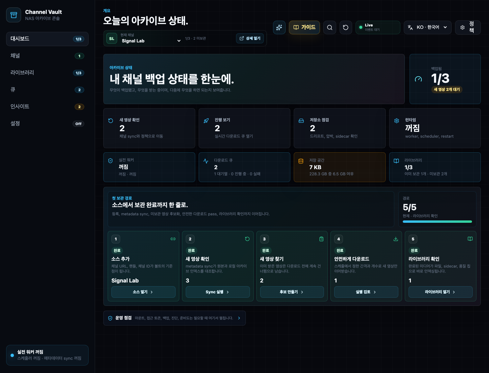
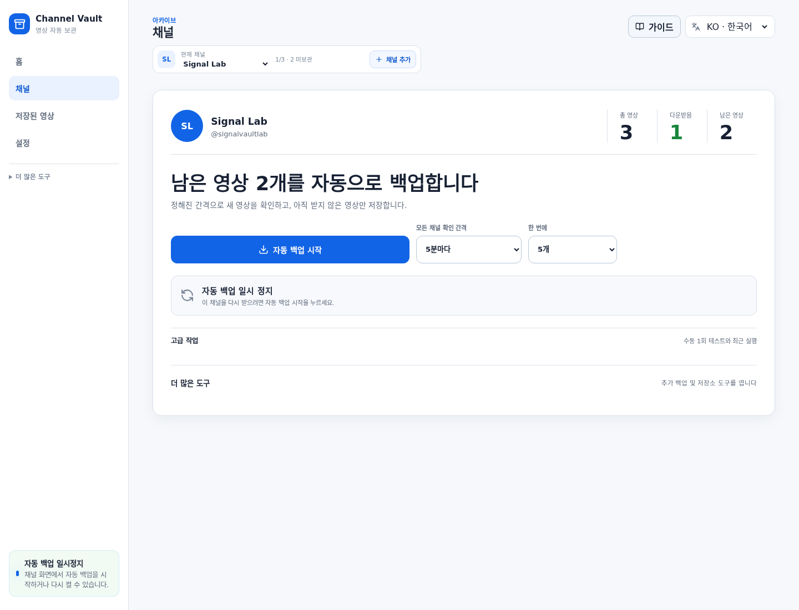
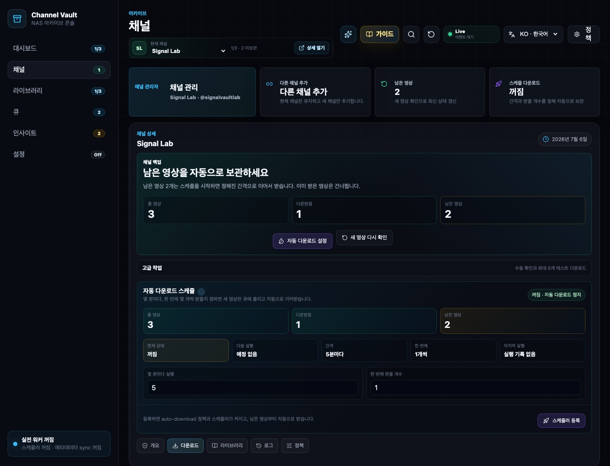
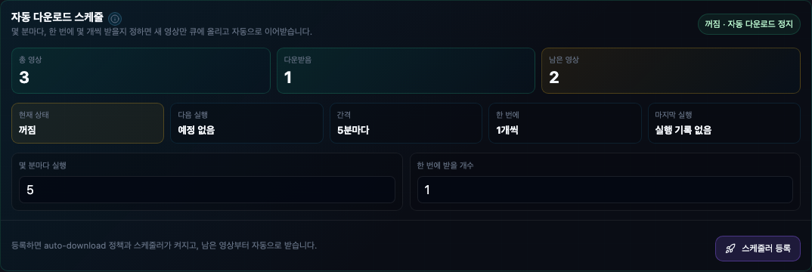
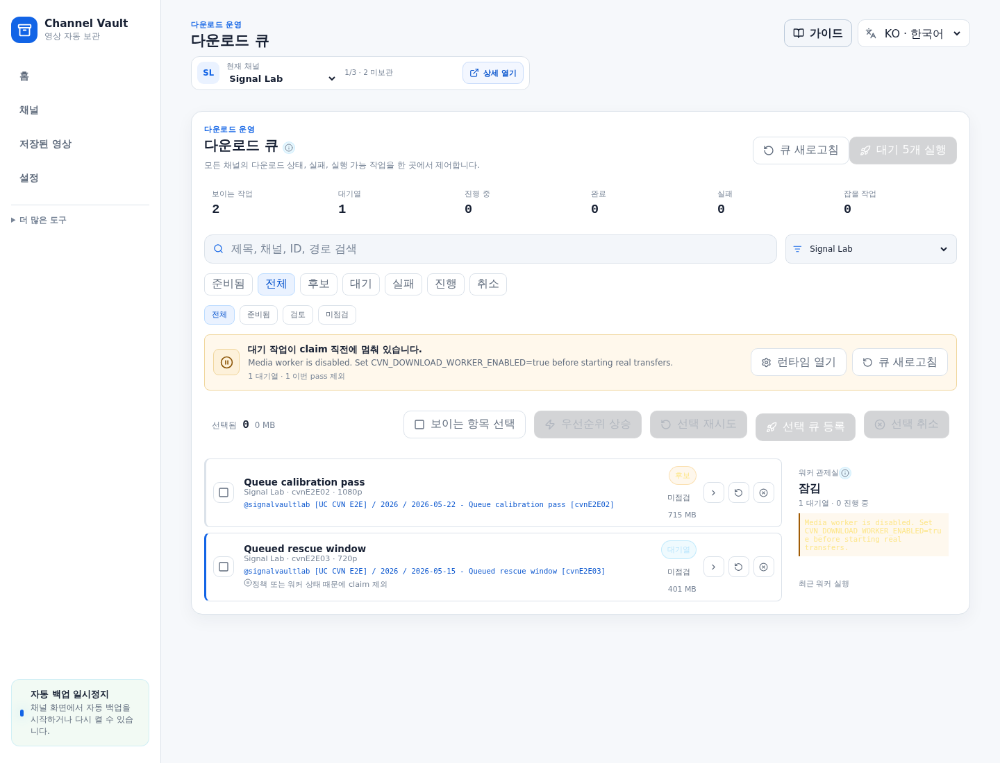
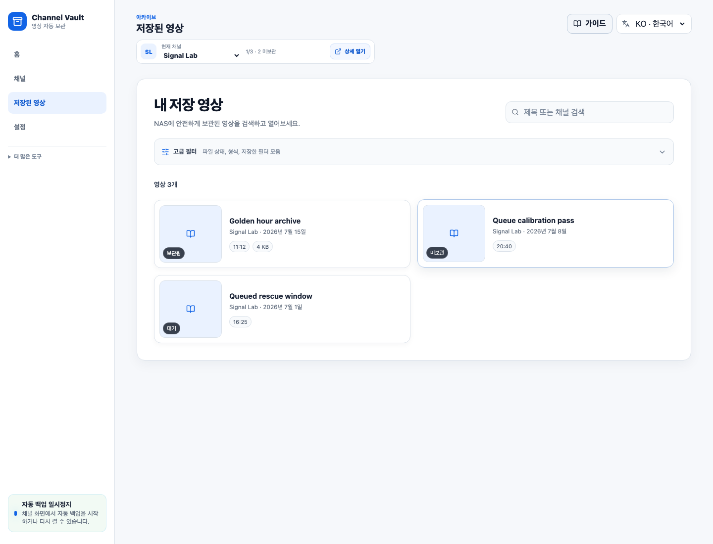
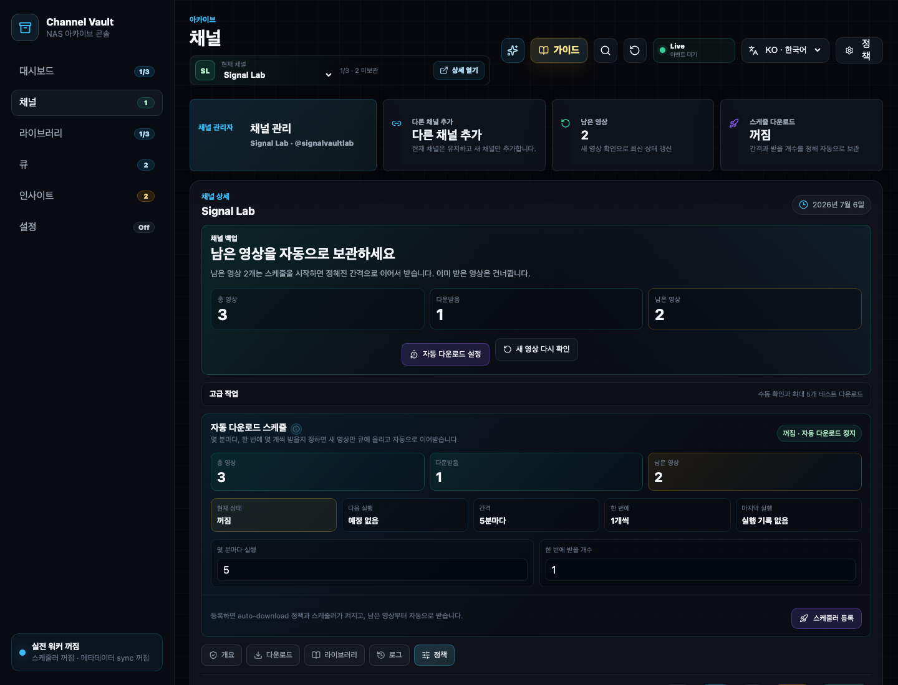
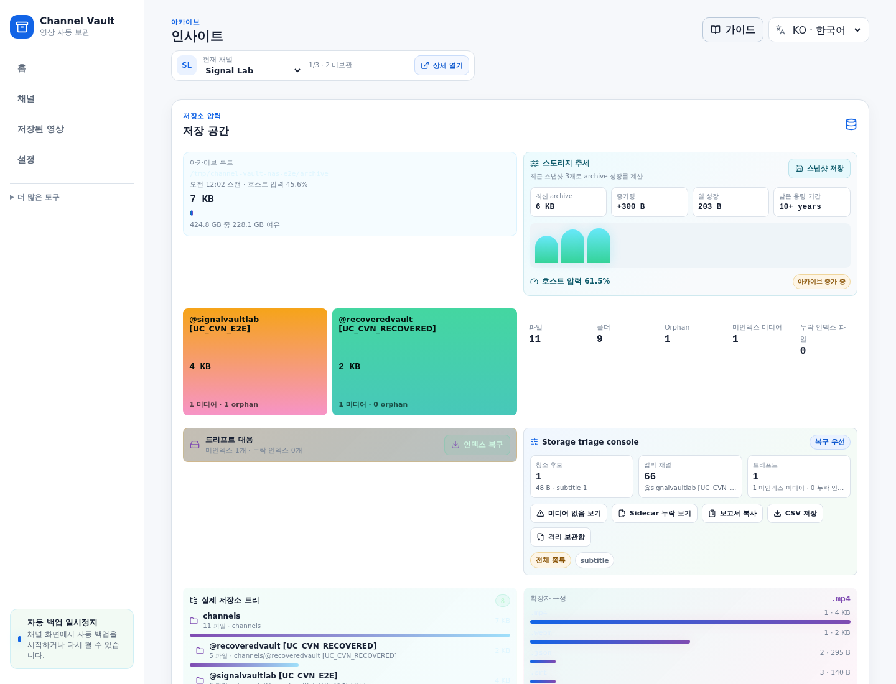
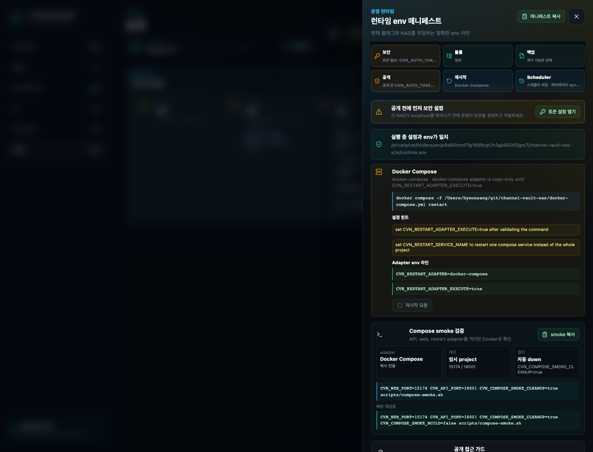
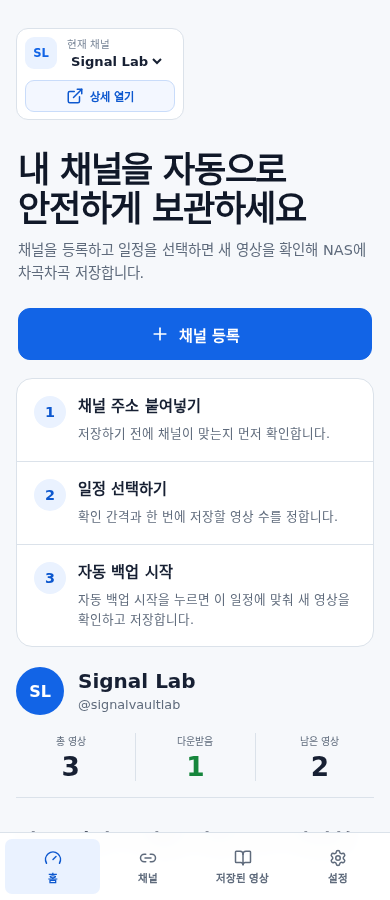

1
Dashboard
대시보드에서 현재 채널과 준비도 확인
좌측 메뉴의 대시보드에서 현재 채널, 미보관 수, 워커 상태, 저장소 압박을 먼저 봅니다.
이 문서는 Channel Vault NAS를 처음 여는 사용자가 채널 등록, 새 영상 확인, 이미 받은 영상 건너뛰기, 안전한 다운로드 pass, 라이브러리 확인, 런타임 설정까지 CLI 없이 따라갈 수 있도록 만든 화면 중심 매뉴얼입니다.
등록, sync, 후보, 다운로드, 검증
실다운로드는 확인 모달 뒤에만 실행
DB 행보다 실제 NAS 파일 존재 여부를 중시
공개망은 SSO나 reverse proxy 뒤에서만
처음에는 메뉴를 모두 이해하려 하지 않아도 됩니다. 아래 5개만 따라가면 “새 영상만 다운로드”라는 원래 목표까지 도달합니다.
좌측 메뉴의 대시보드에서 현재 채널, 미보관 수, 워커 상태, 저장소 압박을 먼저 봅니다.
채널 화면의 새 영상 확인을 눌러 metadata sync를 실행합니다.
이미 받은 영상은 건너뜀 숫자를 보고, 실다운로드 전에 확인 모달을 검토합니다.
후보, 대기, 진행, 실패를 필터링하고 필요한 경우 retry/cancel/preflight를 수행합니다.
다운로드가 끝나면 라이브러리와 채널 커버리지의 보관 수가 실제 파일 기준으로 반영됩니다.
워커가 꺼져 있거나 채널이 maintenance 상태면 후보 생성은 가능하지만 실제 claim은 막힙니다.
youtube-dl --download-archive archive.txt처럼 이미 받은 영상을
건너뛰는 경험을 화면으로 보여줍니다. 차이는 스킵, 후보, 큐, 파일 검증이 모두 보인다는 점입니다.
대시보드는 깊은 설정 화면이 아니라 운영 Cockpit입니다. 현재 채널의 미보관 수, 큐 대기, 저장소 압박, 런타임 상태를 한 화면에서 읽습니다.

현재 채널 드롭다운에서 운영할 채널을 고릅니다.새 영상 확인 카드가 0보다 크면 채널 sync부터 실행합니다.진행 보기가 0보다 크면 큐에 남은 작업을 확인합니다.런타임 꺼짐이면 Settings에서 워커/스케줄러를 켜야 실다운로드가 가능합니다.
채널 화면은 개요 / 다운로드 / 라이브러리 / 로그 / 정책 탭으로 나뉩니다.
처음에는 개요에서 상태를 보고, 실제 작업은 다운로드 탭에서 시작합니다.

새 영상 확인: YouTube metadata를 다시 읽고 새 영상/삭제/비공개 상태를 갱신합니다.새 영상만 다운로드: 미보관 영상만 후보로 만들고 확인 모달을 엽니다.진행 보기: 현재 채널로 필터된 큐 화면으로 이동합니다.다운로드 탭은 후보 생성, preflight, 선택 큐 등록, worker dry-run, 실다운로드 버튼을 한곳에 모읍니다. 기본값은 안전한 확인 흐름입니다.


Worker is paused: 채널 정책이나 런타임 설정에서 worker claim이 막혀 있습니다.실전 워커 꺼짐: Settings에서 워커를 켜고 apply/restart 흐름을 완료해야 합니다.잡을 작업 0: 후보가 없거나 이미 보관된 파일로 판정된 상태입니다.
기존 archive.txt를 붙여넣으면 앱이 각 라인을 이미 보관,
알려진 미보관, 알 수 없음,
중복/무효 라인으로 나눕니다. 이 단계에서는 실제 다운로드가 시작되지 않습니다.
큐는 전체 job 관제 화면입니다. 채널 상세의 작은 큐보다 넓게 보고, 상태/프리플라이트/채널 필터로 작업을 좁힙니다.

실행 가능 필터로 지금 처리할 수 있는 작업만 봅니다.프리플라이트로 yt-dlp 실행 계획과 위험 신호를 확인합니다.선택 큐 등록으로 후보를 대기열에 올립니다.드라이런으로 worker가 어떤 작업을 잡을지 확인합니다.실다운로드는 확인 모달과 최대 5개/pass 제한 뒤에만 실행합니다.라이브러리는 DB 행만 믿지 않습니다. 다운로드 폴더 아래 실제 미디어 파일과 sidecar를 보고 보관됨/미보관/부분 sidecar/미디어만 있는 항목을 구분합니다.

무자막 h264, media only 같은 저장 뷰로 반복 점검을 빠르게 합니다.운영 앱은 결과보다 이유가 중요합니다. 로그 탭은 sync/download/library/runtime 이벤트를, 정책 탭은 채널별 자동화 기준을 보여줍니다.

auto_download가 켜져도 worker가 꺼져 있으면 후보 생성만 되고 실제 claim은 멈춥니다.sync_interval_minutes가 metadata scheduler의 due channel 판정 기준입니다.Insights는 저장소 scanner 화면입니다. 용량 압박, 폴더 구조, orphan sidecar, 인덱싱되지 않은 미디어, DB에는 있는데 디스크에 없는 항목을 찾습니다.

Settings는 앱을 운영 모드로 바꾸는 장소입니다. 워커, scheduler, yt-dlp/ffprobe 경로, restart adapter, auth token, 백업/복구 명령, tick 로그를 다룹니다.

CVN_AUTH_TOKEN을 설정해야 localhost 밖 공개가 안전해집니다.Apply 후 restart 흐름까지 완료합니다.모바일에서는 좌측 메뉴가 상단 그리드로 바뀌고, 카드가 세로로 쌓입니다. 실제 대량 운영은 데스크톱이 편하지만, 상태 확인과 빠른 이동은 좁은 화면에서도 가능합니다.

Settings에서 worker를 켜고, 채널 정책/로그에서 maintenance 사유를 확인하세요.
먼저 새 영상 확인을 누르고, Library에서 실제 보관 상태를 봅니다.
라이브러리와 대시보드는 실제 다운로드 폴더 기준으로 coverage를 계산합니다.
미리보기에서 중복/무효/알 수 없음 라인을 먼저 보고 stage하세요.
큐에서 job을 펼치고, 로그 탭에서 실패 이벤트와 yt-dlp 메시지를 확인합니다.
Settings의 Runtime guide와 Deployment Security 문서를 함께 확인하세요.